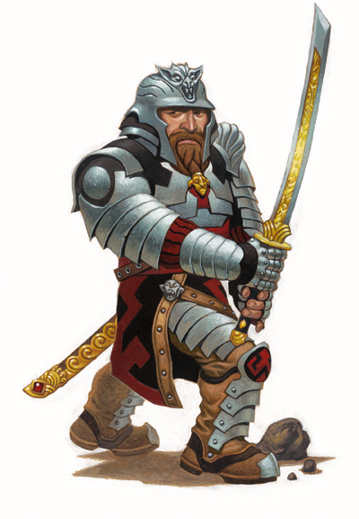

|
武士（Ｓａｍｕｒａｉ）

武士因其无畏的勇猛和严肃的荣誉感而闻名，他们是封建日本的贵族军人。在奇幻设定中，武士为勇气和荣誉为其大名、将军或其他领袖而战。在战场上，他们勇往直前、一马当先的作风无人不晓；在战争中，仅仅是他们的出现就足以令敌人落魄潜逃。
冒险：武士会依照其大名的吩咐承担任务或进行别的冒险活动，他们的大名也常常把中到高级的武士作为调解纷争的专家。武士会被派遣去防御正被围困的村庄，在战争中统领大军，或是去追杀并击败玷污了其大名名誉的对手。
特质：同时挥动着以自己名字命名的武士刀（ｋａｔａｎａ）（重剑）和肋差（ｗａｋｉｚａｓｈｉ）（短剑），武士在近战中同战士一样的强有力，尽管并不是样样精通。武士对于武士道的恪守使敌人闻风丧胆，甚至他们的坚毅的眼神都能使敌人望而生畏。
阵营：几乎每一名武士的生活都遵从武士道的守则：全身心的服从大名，勇敢地面对极度的危险，敬重前辈、同辈以及后辈。武士总是守序阵营，能够在行为上高度克制自己，在有关荣誉和公平的事件上却无法保持镇定。
宗教：在奇幻世界中，一些武士并不信仰神祗，他们笃信的是武士道的传统，并以此作为其道德精神上和民族气节上的引导。其他的武士倾向于有关秩序，荣誉和公平的神祗，比如海若尼斯和圣·库伯斯特。还有一些邪恶武士接受海克斯托式的残暴。
背景：传统上说，武士往往都是有着贵族血统的，尽管民间有着不少关于被贵族收养的孤儿和在战争中突出勇敢的步兵最终成为了武士的传说。成为武士意味着人物要花上数不清的时间去练习使用武士刀和肋差，去学习武士道的习惯与礼节，以及无情的信条。
种族：有着宗族基础，守序社会的矮人最适于武士文化。精灵的长寿和历史使命感也可能引领他们走上武士之路。大多数的半身人武士由于徘徊不前，很难形成影响力。所有武士中，数量最少的可能就是半兽人了，因为很少会有半兽人在文明社会中能够达到足够高的阶级去成为武士。
与其他职业的关系：因为同样是无论职业生活还是自己的生活都要遵循行为准则，所以武士同圣武士能够很好的相处，尽管当被圣武士问道：“这样做正确么？”时，武士还是会很迷惑（武士典型的回答会是：“质疑大名的命令就是玷污大名的名誉！”）。在训练方面，武士同武僧一样是以训练严酷，自律性强而令人折服的。武士也能够同战士，尤其是当服务于同一支部队的情况下，以及那些作品能够反映合适题材的吟游诗人和睦相处。武士只能勉强容忍野蛮人和那些专注于盗窃和其它无耻行当的游荡者。
角色：全身着重甲，双手持锐刃，武士是前线上的先锋军。他们能通过一连串的特殊能力让敌人士气崩溃。除此之外，由于受到过良好的礼节训练，武士还能够担当谈判代表和发言人的角色。
游戏规则信息
属性：对于挥剑的武士来说，力量是极为重要的，敏捷和体质也能够帮助他们在战争中幸免。武士的很多职业特性还依赖于魅力--武士的魄力能够使他的敌人颤栗、恐惧。
阵营：任何守序阵营。
生命骰数：ｄ１０
本职技能
武士的本职技能如下（括号中为该技能的关键属性）：“专注”（体质），“手艺”（智力），“交涉”（魅力），“威吓”（魅力），“知识”（历史）（智力），“知识”（贵族与皇室）（智力），“骑术”（敏捷），和“察言观色”（魅力）。各技能说明请见《玩家手册》第四章。
１级人物起始技能点数：（２＋智力调整值）ｘ４
升级可得到的技能点数：２＋智力调整值。
职业特性
擅长武器与防具：武士擅长所有简易武器和军用武器，所有盔甲，但不擅长盾牌。
擅长太刀（Ｐｒｏｆｏｃｏｅｎｃｙ Ｄａｉｓｈｏ）（特异能力）：在近战中，武士刀（一种精工重剑）和肋差（一种精工短剑）是武士的最爱。许多武士都有家传之刀，称作太刀。武士都受过使用这些武器的训练，因此将获得擅长异种武器（重剑）专长作为额外专长。
二刀流（Ｔｗｏ Ｓｗｏｒｄｓ ａｓ Ｏｎｅ）（特异能力）：到了２级，武士学成此能力，可以同时挥动他的武士刀和肋差。当手持武士刀和肋差时，武士视为获得双武器攻击专长，即使在没有满足先决条件的情况下。
气合斩（Ｋｉａｉ Ｓｍｉｔｅ）（特异能力）：每日一次，达到３级的武士可以在战斗中大喊一声，用以鼓舞自己。当武士一声大喊（一个即时动作）后，他的下一次攻击的攻击检定和伤害掷骰将等同于他的魅力加值（最少为＋１）。
居合斩大师（Ｉａｉｊｕｔｓｕ Ｍａｓｔｅｒ）（特异能力）：到了５级，武士能够熟练的运用拔刀术。拔刀术是一种战斗技巧，能够使武士集中全部注意力瞬间拔出武器，遂以行云流水般的动作攻击敌人。当手持武士刀或肋差时，武士视为获得即时备战专长。
鬼眼狂视（Ｓｔａｒｅｄｏｗｎ）（特异能力）：到了６级，仅仅是武士的出现便是一种对敌人的恐吓打击。武士的威吓检定将获得＋４的加值，而且能够使敌人士气溃败（有关威吓技能的说明请见《玩家手册》３ｒ７６页）。
精通先攻（Ｉｍｐｒｏｖｅｄ Ｉｎｉｔｉａｔｉｖｅ）（特异能力）：到了８级，武士的拔刀术技巧已经通过了无数次武士与武士间的决斗训练，已经达到了能够预见对方出手时机的境界。他将获得精通先攻专长。
鬼眼傲视（Ｍａｓｓ Ｓｔａｒｅｄｏｗｎ）（特异能力）：到了１０级，武士的出现能够恐吓一群敌人。当进行威吓检定时，武士能够通过一个标准动作对其周围３０尺的敌人造成士气溃败影响。
精通二刀流（Ｉｍｐｒｏｖｅｄ Ｔｗｏ Ｓｗｏｒｄｓ ａｓ Ｏｎｅ）（特异能力）：到了１１级，武士使用武士刀和肋差的威力愈加精进。当手持武士刀和肋差时，武士视为获得精通双武器攻击专长，即使在没有满足先决条件的情况下。
精通鬼眼狂视（Ｉｍｐｒｏｖｅｄ Ｓｔａｒｅｄｏｗｎ）（特异能力）：到了１４级，仅仅是武士的一瞥便足以恐吓一群敌人。武士能够通过一个移动动作对其周围３０尺的敌人造成士气溃败影响，而不再是标准动作。
高等二刀流（Ｇｒｅａｔｅｒ Ｔｗｏ Ｓｗｏｒｄｓ ａｓ Ｏｎｅ）（特异能力）：到了１６级，武士与他的武士刀和肋差已经达到了人刀合一的境界。当手持武士刀和肋差时，武士视为获得高等双武器攻击专长，即使在没有满足先决条件的情况下。
惊现沙场（Ｆｒｉｇｈｔｆｕｌ Ｐｒｅｓｅｎｃｅ）（特异能力）：达到２０级的武士的勇气、荣誉、以及战斗威力都已经成为了一种传奇。当武士拔刀的一霎那，其３０尺内的敌人都将进行一次意志豁免检定（ＤＣ为２０＋武士的魅力调整值），否则：陷入慌乱状态４ｄ６轮（ＨＤ为小于等于４）；陷入颤栗状态４ｄ６轮（ＨＤ为５至１９）；ＨＤ大于等于２０的生物则不受影响。任何敌人一旦成功地抵抗了一名武士的影响，则他对同一名武士的惊现沙场效果免疫２４小时。
表１－３：武士
等级 ＢＡＢ 强韧 反射 意志 特殊
１ ＋１ ＋２ ＋０ ＋０ 擅长太刀
２ ＋２ ＋３ ＋０ ＋０ 二刀流
３ ＋３ ＋３ ＋１ ＋１ 气合斩 １次／日
４ ＋４ ＋４ ＋１ ＋１ －
５ ＋５ ＋４ ＋１ ＋１ 居合斩大师
６ ＋６／＋１ ＋５ ＋２ ＋２ 鬼眼狂视
７ ＋７／＋２ ＋５ ＋２ ＋２ 气合斩 ２次／日
８ ＋８／＋３ ＋６ ＋２ ＋２ 精通先攻
９ ＋９／＋４ ＋６ ＋３ ＋３ －
１０ ＋１０／＋５ ＋７ ＋３ ＋３ 鬼眼傲视
１１ ＋１１／＋６／＋１ ＋７ ＋３ ＋３ 精通二刀流
１２ ＋１２／＋７／＋２ ＋８ ＋４ ＋４ 气合斩 ３次／日
１３ ＋１３／＋８／＋３ ＋８ ＋４ ＋４ －
１４ ＋１４／＋９／＋４ ＋９ ＋４ ＋４ 精通鬼眼狂视
１５ ＋１５／＋１０／＋５ ＋９ ＋５ ＋５ －
１６ ＋１６／＋１１／＋６／＋１ ＋１０ ＋５ ＋５ 高等二刀流
１７ ＋１７／＋１２／＋７／＋２ ＋１０ ＋５ ＋５ 气合斩 ３次／日
１８ ＋１８／＋１３／＋８／＋３ ＋１１ ＋６ ＋６ －
１９ ＋１９／＋１４／＋９／＋４ ＋１１ ＋６ ＋６ －
２０ ＋２０／＋１５／＋１０／＋５ ＋１２ ＋６ ＋６ 惊现沙场
前武士：脱离守序阵营或犯严重无耻罪过的武士将失去他所有的依赖于魅力属性或以魅力检定为基础的职业特性。事情较小有难处的可以开脱，但对武士道的严重破坏不可原谅。能够被判失去武士资格的行为包括违抗上级官员或封建领主的命令；在重大战役中因胆怯而逃跑；被发现撒下大谎或作出其他不诚实的事；作出令人发指的野蛮行为。被流放的前武士人物无法再提升武士职业等级，直到赎罪为止（见《玩家手册》３ｒ２０１页“赎罪术”说明。），还可以重获职业特性。
类似任何其他职业的成员，武士也可以兼职，但兼职武士将面临一种特殊的限制。一旦获得其他职业等级，武士将再不能提升武士等级，尽管其当前的武士能力仍将保留。这体现了武士职业要求武士恒久不变的忠于武士道精神。武士可以进阶并不违背武士道的进阶职业。例如剑圣、近位骑士（都见本书）和矮人防御者（见《城主指南》）。ＤＭ也可以自行指定其它适于武士的进阶职业。
被流放的前武士可以选择进阶浪人（Ｒｏｎｉｎ）职业（见本书第二章），给他们以重新获得失去的职业特性的机会。
人类武士起始套组
防具：鳞甲（ＡＣ＋４，防具检定减值－６，速度２０尺，３０磅）。
武器：重剑（１ｄ１０，致命１９－２０／ｘ２，６磅，单手，挥砍）。短剑（１ｄ６，致命１９－２０／ｘ２，２磅，轻型，穿刺）。短弓（１ｄ６，致命ｘ３，６０尺，２磅，穿刺）。
技能选择：技能数量为３＋智力调整值。
技能 点数 相关属性 装甲惩罚
手艺（书写） ４ 智力 －
交涉 ４ 魅力 －
威吓 ４ 魅力 －
知识（历史） ４ 智力 －
知识（贵族与皇室） ４ 智力 －
骑术 ４ 敏捷 －
察言观色 ４ 感知 －
专长：“专攻武器”（重剑）。
额外专长（人类）：“战斗反射”。
装备：背包装有水袋、口粮一天份、睡袋、麻袋、燧石与铁片。另带有附盖提灯、油１品脱、箭袋有２０枝箭。
金钱：２ｄ４金币。 |